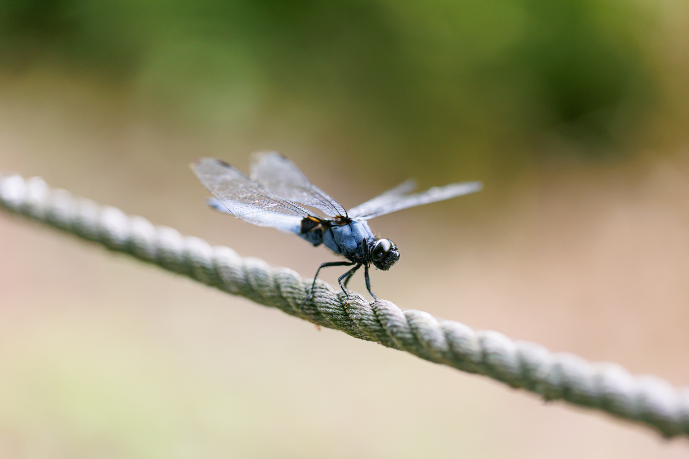
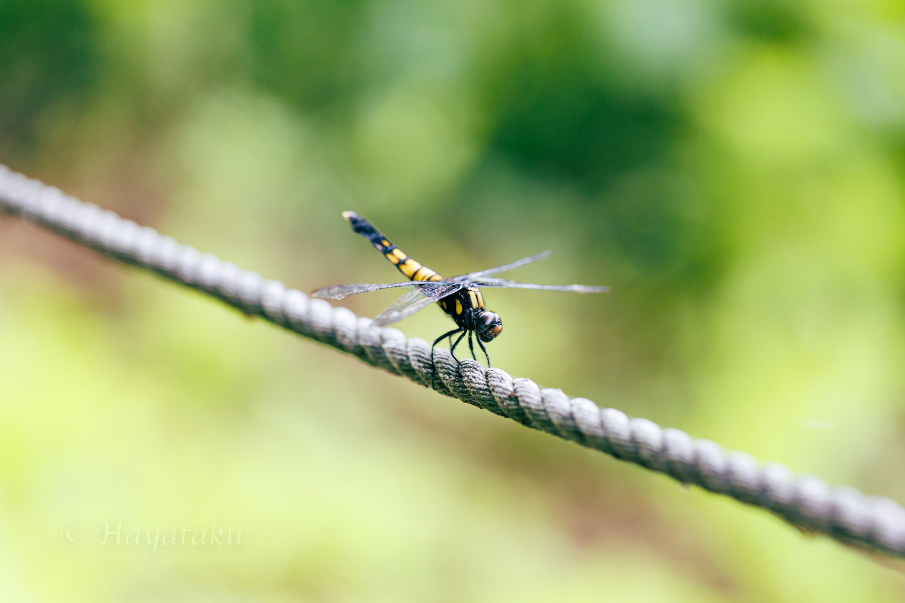

2022年6月25日 - 平地の水辺にて -
本日はクロスジギンヤンマの撮影を目的に出かける．現地に到着して探すも飛んでおらず，この暑さと時期的にもう厳しいのかもしれない．池にはシオカラトンボ，コシアキトンボ，ショウジョウトンボ，ギンヤンマが飛んでいた．木陰を歩いているとロープのところにオオシオカラトンボが数頭止まっていた．いつもは他のトンボを優先して真剣に撮ることは少ないが，今日は真面目に撮影する．それにしても日が差しているところはとても暑いが，木陰はかなり涼しい．今日は撮れるトンボが少ないため早めに切り上げた．

2022年6月25日 オオシオカラトンボ Orthetrum melania melania ♂
Canon EOS R6, EF100mm F2.8L Macro IS USM, 1/200, F2.8, ISO 800, Lightroom Classic development.

2022年6月25日 オオシオカラトンボ Orthetrum melania melania ♀
Canon EOS R6, EF100mm F2.8L Macro IS USM, 1/200, F3.5, ISO 800, Lightroom Classic development.